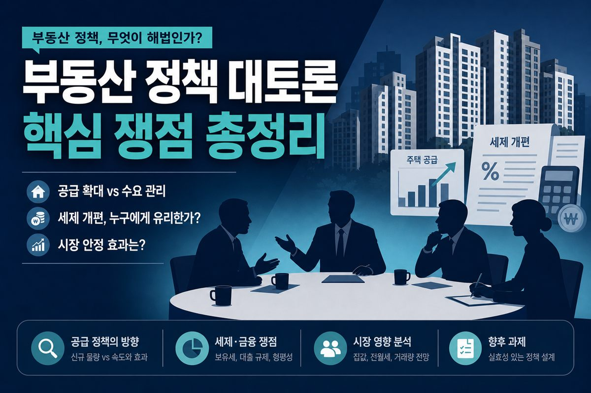

이재명 대통령 부동산 대토론회 총정리 — 보유세·다주택·공급, 무슨 얘기 나왔나 (2026.7.23)
확정안이 아니라, 공개된 논의·방향을 참고용으로 정리한 글입니다

2026년 7월 23일 오전, 이재명 대통령이 직접 주재한 ‘부동산 정책 국민 대토론회’가 열렸다. 오전 10시부터 약 100분간 이어진 이 토론회에는 정부 관계자를 비롯해 학계·연구소·언론 등 전문가, 부동산 유튜버, 공인중개사, 맘카페 회원, 실수요자 등 다양한 배경의 140명이 참석했다. 여기에 더해, 사전에 온라인으로 접수된 국민 제안만 4,500건이 넘었다고 한다. 정부가 이 사안을 얼마나 무겁게 보고 있는지 참석 규모만 봐도 짐작이 간다.
먼저 읽어주세요
아래 내용은 토론회·공개 논의에서 거론된 방향·전망을 정리한 것입니다. 세제·공급 관련 세부 숫자와 시행 시점은 조만간 발표될 개편안을 확인해야 하며, 확정된 정책이라고 단정할 수 없습니다. 특정 정치적 입장을 지지하거나 반대하기 위한 글이 아닙니다.
- 왜 이번 토론회가 세제 개편안 수렴과 연결되는지 정리합니다.
- 대통령이 공지한 5가지 핵심 쟁점과 공급·다주택 논의를 나눕니다.
- 무주택 실수요자 관점의 청약·특별공급 체크포인트를 살펴봅니다.
왜 이 토론회가 중요한가
솔직히 ‘토론회’ 하면 그냥 여러 사람 모여서 얘기 나누고 끝나는 자리라고 생각하기 쉽다. 하지만 이번엔 성격이 좀 다르다. 이번 토론회는 단순한 의견 청취가 아니라, 곧 발표될 세제 개편안의 방향을 잡는 마지막 수렴 단계에 해당한다.
정부는 앞서 공급·금융·세제 세 개 분야로 나눠 세 차례에 걸쳐 전문가 토론회를 진행했다. 그리고 오늘 열린 국민 대토론회에서 나온 의견까지 종합해, 조만간 발표될 세제 개편안에 반영하겠다는 계획이다. 이재명 대통령도 지난 21일 국무회의에서 “국민들의 목소리를 겸허하게 경청하고, 그 속에서 실현 가능한 대안과 대책을 만들어내겠다”고 언급한 바 있다.
즉 오늘 나온 이야기가 그냥 흘러가는 게 아니라, 실제 정책으로 이어질 가능성이 있다는 뜻이다. 무주택자든 유주택자든, 다주택자든 실수요자든, 자기 상황에 맞게 눈여겨봐야 하는 이유다.
대통령이 직접 공지한 5가지 핵심 쟁점
이 대통령은 토론회에 앞서 주요 쟁점을 미리 공개했다. 두루뭉술하게 “부동산 얘기 하겠다”가 아니라, 구체적으로 무엇을 논의할지 못 박은 것이다. 정리하면 다섯 가지다.
- 부동산에 대한 적정한 보유세 수준을 어떻게 볼 것인가.
- 실거주용 1주택과 비거주용 또는 다주택에 세금 차이를 둘 것인가, 둔다면 어느 정도가 적정한가.
- 보유세를 강화한다면 ‘초고가 주택’의 기준을 어디에 둘 것인가.
- 보유세와 거래세의 관계를 어떻게 설정할 것인가.
- 이렇게 걷은 보유 세수를 어디에 쓸 것인가.
이 다섯 가지를 관통하는 하나의 메시지가 있다. ‘실제로 사는 집 한 채는 보호하되, 살지 않으면서 보유만 하는 주택에는 부담을 늘리겠다’는 방향이다. 실거주와 비거주를 나누고, 보유세를 세제의 중심축으로 삼겠다는 그림이 읽힌다.
공급 — “인허가가 아니라 착공으로 승부한다”
이번 토론회에서 세제만큼이나 비중 있게 다뤄진 축이 바로 공급이다. 그리고 여기서 정부가 강조한 표현이 인상적이다. ‘인허가가 아니라 착공’ 기준으로 물량을 관리하겠다는 것.
이게 무슨 뜻이냐면, 과거 정부들은 종종 “몇만 가구를 공급하겠다”는 계획을 발표했지만, 실제 착공과 입주까지 이어지지 않아 국민이 체감하지 못하는 경우가 많았다. 계획상 숫자와 현실의 입주 물량 사이에 큰 간극이 있었던 것이다. 이번엔 그 간극을 줄이겠다는 의지로, 인허가 단계가 아니라 실제 삽을 뜨는 착공을 기준으로 삼아 국민이 입주 가능성을 실감할 수 있는 물량을 확보하겠다는 전략이다.
공급 방식으로는 입지가 좋은 도심 요충지 활용, 그리고 노후 청사나 공공 부지를 활용한 복합 개발 등이 거론되고 있다. 국토교통부 차원에서도 지자체와의 협의 속도를 높이기 위한 조직 정비가 이뤄지고 있다는 이야기가 나온다. 핵심은 세제 규제를 최후의 수단으로 두고, 공급 확대를 집값 안정의 우선 카드로 삼겠다는 기조다.
다주택자 세제 — 가장 뜨거운 감자
논의 중에서 시장이 가장 예민하게 반응하는 대목은 역시 다주택자에 대한 세제다. 핵심 문제 제기는 이렇다. “살지도 않는 집을 투기 목적으로 오래 보유했다는 이유만으로 세금을 깎아주는 것이 과연 맞느냐.”
장기보유특별공제(장특공제) 논의
여기서 자주 언급되는 것이 장기보유특별공제, 이른바 ‘장특공제’다. 현행 제도에서는 부동산을 오래 보유할수록 양도세를 계산할 때 일정 비율을 공제해준다. 실거주 1주택자는 보유·거주 요건에 따라 상당히 높은 공제를 받을 수 있고, 다주택자나 일반 부동산도 장기 보유 시 일정 부분 공제를 받아왔다.
문제는 이 혜택이 ‘똘똘한 한 채’ 선호와 매물 잠김 현상을 부추긴다는 지적이다. 오래 들고 있을수록 세금이 줄어드니, 팔지 않고 계속 쥐고 있으려는 유인이 생긴다는 것이다. 그래서 비거주 다주택자에 대한 장기보유특별공제 혜택을 손보는 방안이 논의 대상으로 거론되고 있다.
꼭 기억할 점
- 이 부분은 아직 확정된 정책이 아니라 검토·논의 단계다.
- 뉴스 제목만 보면 당장 내일이라도 바뀔 것처럼 느껴지지만, 공식 발표 전까지는 ‘방향’이자 ‘전망’일 뿐이다.
- 구체적인 공제율, 적용 시점, 대상 범위 등은 개편안이 나와봐야 알 수 있다.
실수요자에게 열리는 기회 — 청약
한편 이번 논의는 무주택 실수요자에게는 기회의 신호이기도 하다. 공급 확대, 특히 도심 요충지에서 나오는 물량 중 공공분양의 비중을 높이는 방향이 언급되고 있기 때문이다. 이는 청년과 신혼부부의 주거 사다리를 복원하겠다는 취지로 풀이된다.
특히 생애최초 특별공급이나 신혼부부 특별공급의 소득 기준·자격 요건이 완화될 수 있다는 이야기가 나온다. 그동안 소득이 애매하게 걸쳐 사각지대에 놓였던 맞벌이 부부 등이 새롭게 대상이 될 여지가 생기는 것이다. 만약 이런 방향이 확정된다면, 무주택 실수요자 입장에서는 청약 가점 관리와 특별공급 자격 점검이 그 어느 때보다 중요해진다. 내 가점이 어디쯤인지 궁금하다면 청약 가점 계산기로 먼저 점검해 보는 것도 방법이다.
정리 — 오늘은 ‘결론’이 아니라 ‘방향’이다
오늘 토론회를 한 줄로 요약하면, 결론을 발표한 자리가 아니라 방향을 제시한 자리다. 큰 그림은 세 가지로 정리된다. 실거주자는 보호하고, 비거주·다주택에는 부담을 강화하며, 공급을 실질적으로 확대하겠다는 것.
하지만 이 큰 그림이 실제 성과로 이어지려면 넘어야 할 산도 많다. 세제 개편에 따른 조세 저항, 공급 대책이 실제 입주로 이어지기까지의 시차 관리 등이 관건으로 꼽힌다. 방향은 방향일 뿐, 구체적인 숫자와 시행 시기는 조만간 발표될 세제 개편안에서 확인해야 한다.
이 블로그에서는 실제 개편안이 발표되면 그 내용을 다시 한번 정리해 올릴 예정이다. 당장 급하게 움직이기보다는, 방향을 이해하고 자기 상황을 점검하며 준비해두는 것이 지금 시점에서 할 수 있는 가장 현명한 대응이 아닐까 싶다.
면책·안내
이 글은 특정 정치적 입장을 지지하거나 반대하기 위한 것이 아니라, 공개된 논의 내용을 정리해 실수요자의 판단을 돕기 위한 정보성 글입니다. 언급된 세제·공급 관련 내용은 확정된 정책이 아니며, 향후 정부 발표에 따라 달라질 수 있습니다.
📎 출처·참고
- 2026년 7월 23일 부동산 정책 국민 대토론회 관련 공개·보도
- 국무회의 발언·선행 전문가 토론회(공급·금융·세제) 관련 보도
- 청약 가점 계산기 · 종부세 세제 개편 방향 정리

본 글은 2026년 7월 23일 토론회·공개 논의를 정리한 것으로, 실제 확정 정책과 다를 수 있습니다. 세무·청약·계약 결정은 본인 판단과 전문가 상담을 권합니다.